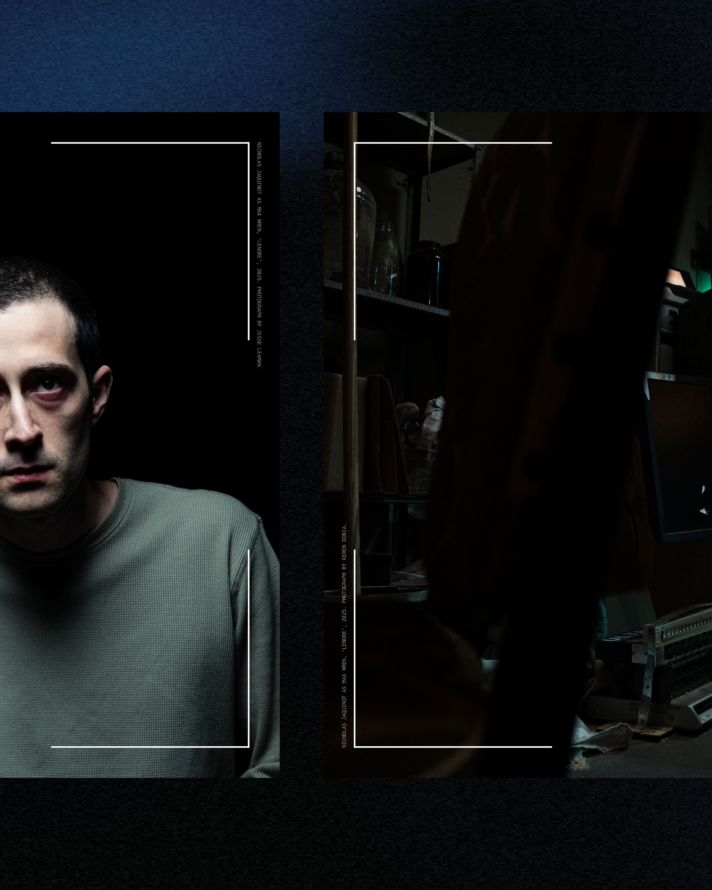
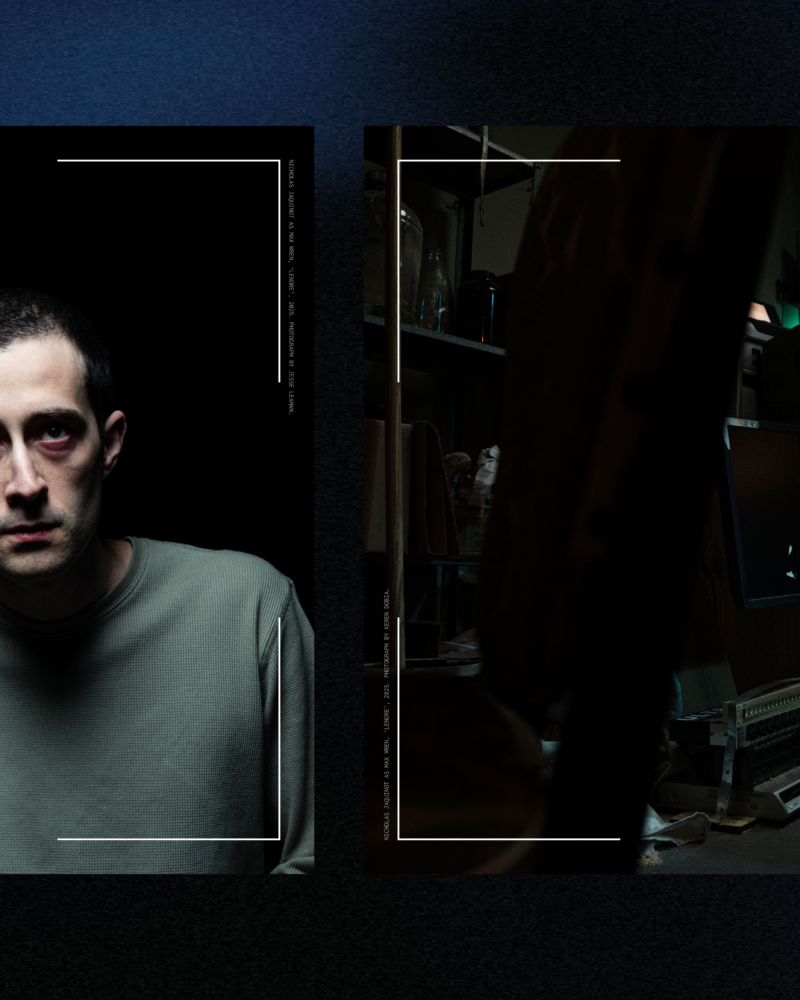
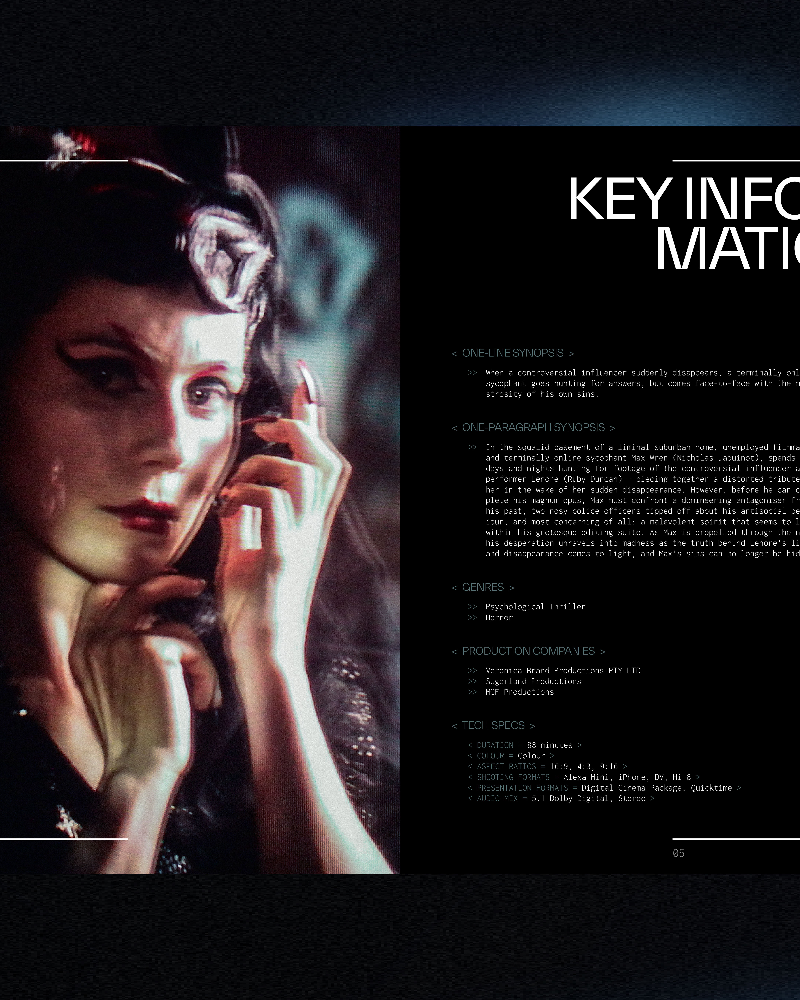
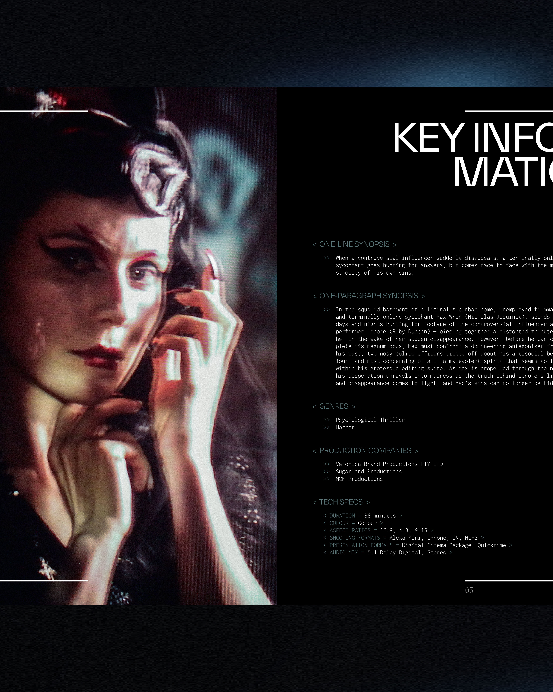
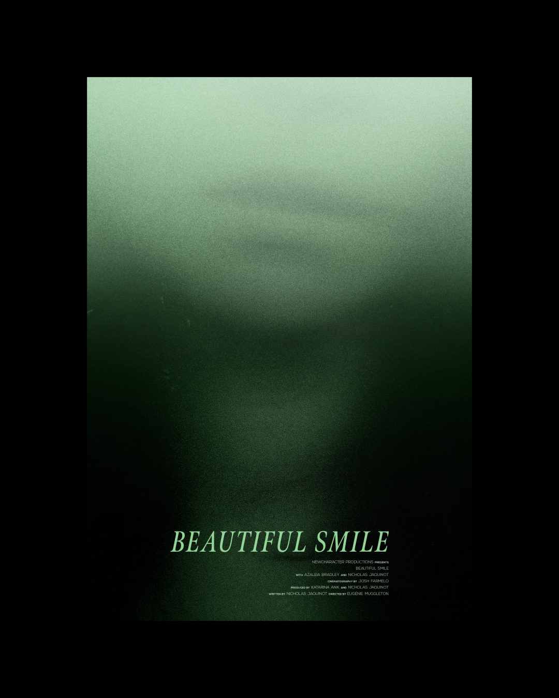

- Katarina Anik
- (AU/DK) Copenhagen — Graphic Designer
-
Isn’t it funny how these introductions are almost always written in the third person?
My name is Katarina. This is my website. I'm a freelance graphic designer honing my skills in the realm of the digital: motion, creative coding, and web design. However, my interests extend to identity, typography, editorial and publication design.
I was born and raised along the east coast of Australia, though Melbourne was home for 12 years, and will forever hold a place in my heart. I relocated to Copenhagen at the beginning of the year, and honestly — still pinching myself.
I've been experimenting, creating, performing and producing for as long as I can remember, from the development of contemporary plays, to original devised pieces realised and translated through the Suzuki Method— a rigorous physical discipline drawn from a diverse range of influences, such as ballet, traditional Japanese and Greek theatre, and martial arts — to scriptwriting and producing in the local film industry. To say it simply, I’m someone who has an insatiable appetite for ideas, process and expression.
I'm currently open to commissions and collaborations — also coffees and conversations. Reach out via the links below.
K
Last updated: 04 May 2025
- Email(katanik dot des at gmail dot com)
- Instagram (katanik double underscore)
- Now
- Graduate / Freelancing
- Education
- University of Melbourne
- BDes, Double Major in Graphic Design & Performance Design
- Mid-year intake, 2021–2025
- —
- Københavns Universitet
- One semester academic exchange
- Selected Projects
-


-
Identity
Motion
Creative Coding
- designX 24
-
Visual identity for the Melbourne School of Design's annual end-of-year exhibition.
In my final year, I was one of four students selected to develop the visual identity for designX 24 — an annual exhibition celebrating graduates from all twelve pathways of the university’s Bachelor of Design.
With our team managing every aspect of the exhibition’s digital and physical presence — from social media assets and printed collateral to large-scale exhibition graphics — our goal was to translate this celebration into an energetic and seductive visual experience that resonated across all touchpoints.
While the work was highly collaborative, I took the lead on creative coding — developing custom code-based visuals that defined the identity’s visual syntax. I was also responsible for designing and delivering all motion and digital assets.
-


-
Experimental Type
Motion
-
Glyphs as Artefacts
An experimental typeface shaped by memory — independent capstone project.
Glyphs as Artefacts is an experimental typeface that embraces a transdisciplinary approach, intertwining in-depth personal reflection with the physical act of design. Memories infuse each glyph with meaning, forming the basis of a typeface that serves as both a visual record and an embodiment of lived experience.
The process began with a method I used in performance — a way of working from an authentic, moment-to-moment place. It centred on active verbs — to hijack, to relish, to warn — used to unlock memory and emotional entry points into the text. I translated that same approach into type design: each letter triggered a word, each word a memory. I followed the thread, gave it voice. Recorded. Transcribed. Externalised. I then took the memory to paper, letting form follow feeling.
Once the glyphs felt resolved, I digitised and refined. The final outcome: an experimental uppercase typeface and an audiovisual piece — a looping, 26-minute sequence cycling through each letter, never static, always in flux — accompanied by sound design: panning, droning, dissonant — drawing you through a space of rupture and recall, where memory falters and reconnects. -
 

 



-
Editorial
Branding
- Lenore, dir. David Ward
-
Electronic press kit — design and development.
When a controversial influencer suddenly disappears, a terminally online sycophant goes hunting for answers, but comes face-to-face with the monstrosity of his own sins.
Format: Feature Film
Genre: Psychological Thriller, Horror
Film Status: Post-production
-

-
Branding
- Beautiful Smile, dir. Eugénie Muggleton
-
Film poster — design and development— this project was also a labour of love where I served as producer across pre-production, production, and post-production.
A prodigious photographer crosses boundaries an aspiring model didn’t know she had — leaving her reeling in the aftermath and struggling to process where things went wrong.
Format: Short Film
Genre: Drama
Premiere: Austin Film Festival (US)
Key Screenings: Torino Film Festival (IT); Flickerfest (AU) -
-
Branding
- Clown, dir. Aarushi Chowdhury
-
Film poster — design and development.
Eight-year-old Sami can't wait to play "serial killers" with her older sister Jiya, but her sister-time is threatened when Jiya's cool new bestie arrives.
Format: Short Film
Genre: Drama
Premiere: SXSW Sydney (AU)
Key Screenings: Melbourne International Film Festival (AU); Cannes Indie Shorts Awards (FR); Byron Bay International Film Festival (AU); St Kilda Film Festival (AU)